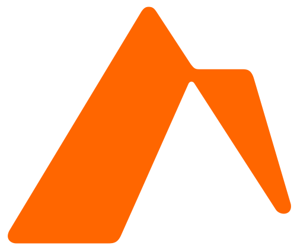

Prepare before diligence begins.
Afissio helps companies identify and resolve diligence friction before it weakens leverage or valuation.
Afissio is a transaction-readiness firm serving founder-led companies preparing for a financing, acquisition, strategic partnership, recapitalization, or institutional investment. Through Deal Engineering, Afissio combines AI-assisted analysis with experienced professional judgment to identify and resolve the issues most likely to create friction during institutional diligence.

Serious transactions expose unresolved issues
A strong company can still encounter avoidable friction when its records, governance, contracts, capitalization, financial documentation, or technical practices do not withstand disciplined review.
That friction can delay a process, distract leadership, and give counterparties leverage.
Afissio reviews the operative record, identifies likely diligence pressure points, and helps leadership address what matters before a live process becomes urgent. The goal is not to promise that every issue disappears. It is to create clarity, establish priorities, and provide a practical path to resolution.
Three ways to engage
Review
Understand where the company stands and what is most likely to create diligence friction.
Sprint
Organize and execute the highest-priority remediation and structural decisions.
Support
Maintain transaction readiness as the company and its transaction timeline evolve.
A disciplined approach
Deal Engineering is Afissio's method for reviewing, identifying, organizing, prioritizing, and helping resolve the issues that matter most before consequential diligence begins.
Direct, experienced involvement
AI-assisted analysis supports careful review and issue-spotting. Experienced professionals remain responsible for interpretation, prioritization, judgment, and client-facing conclusions.